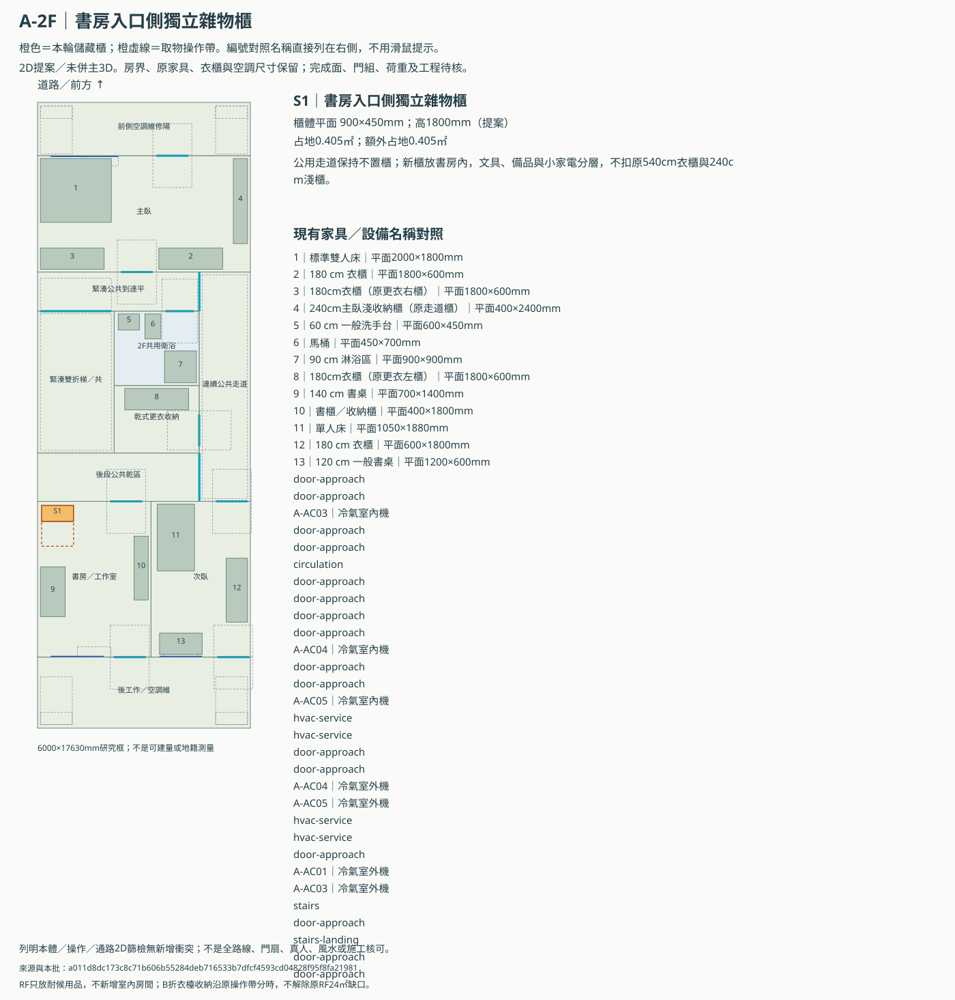
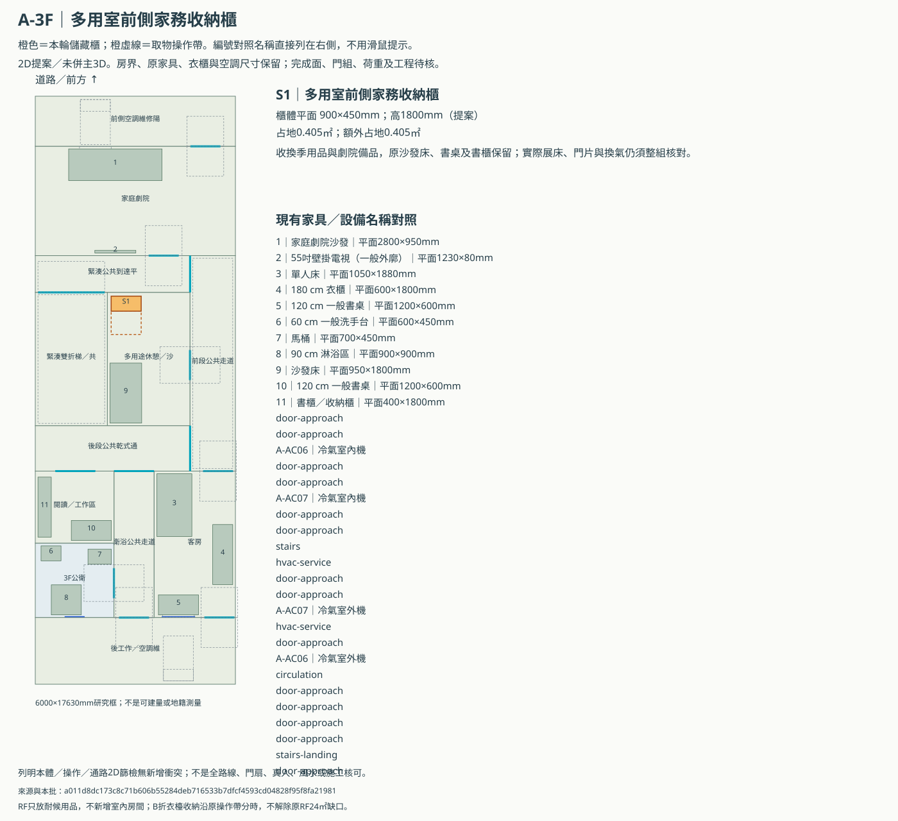
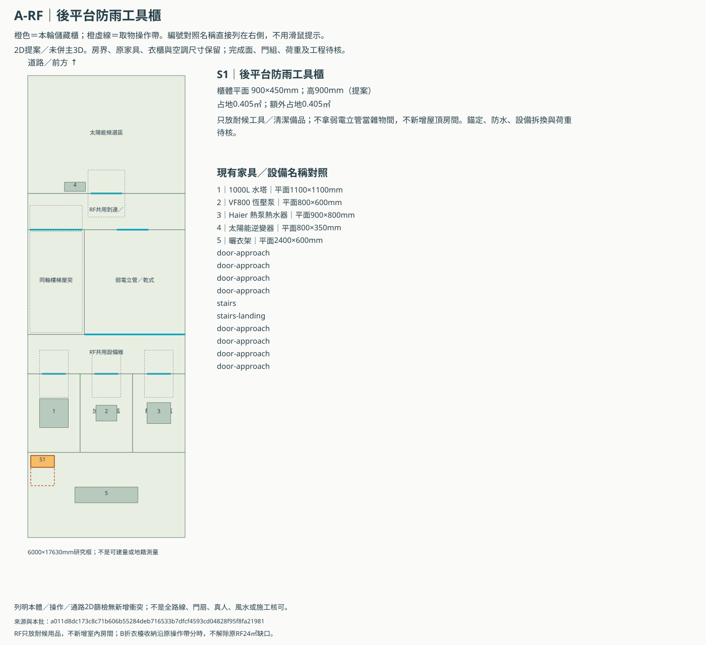
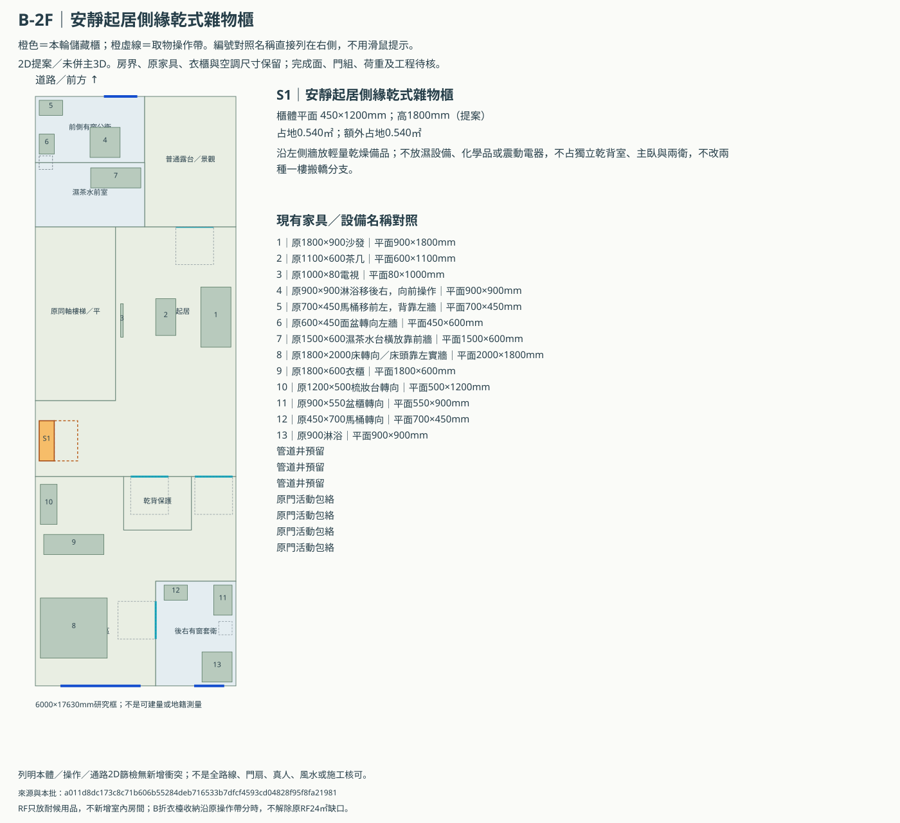
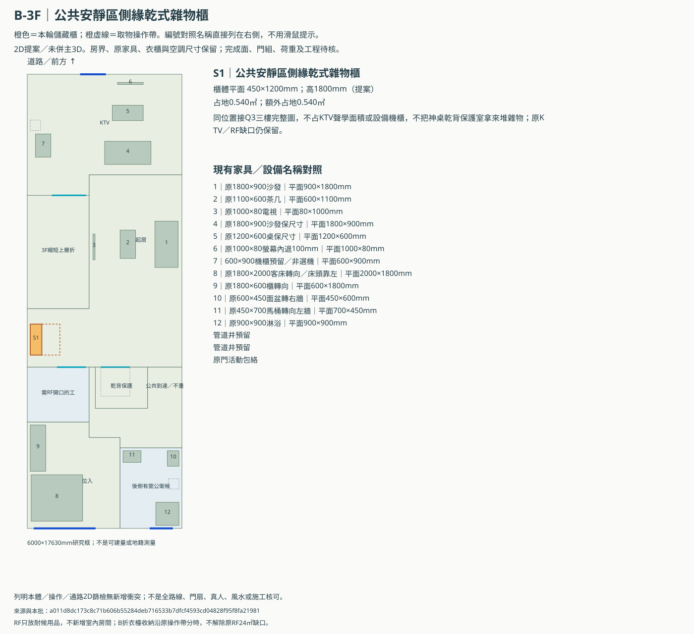
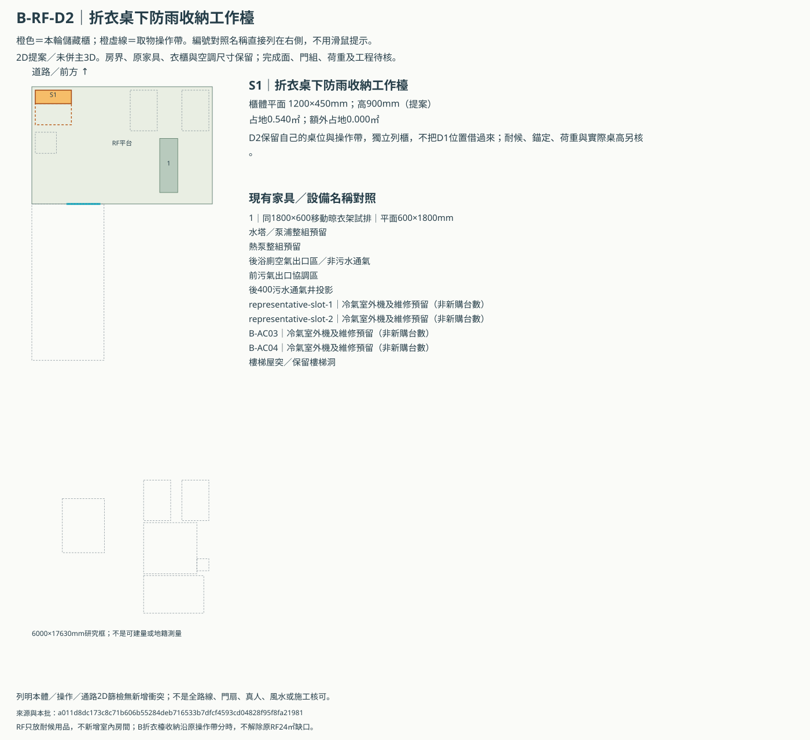
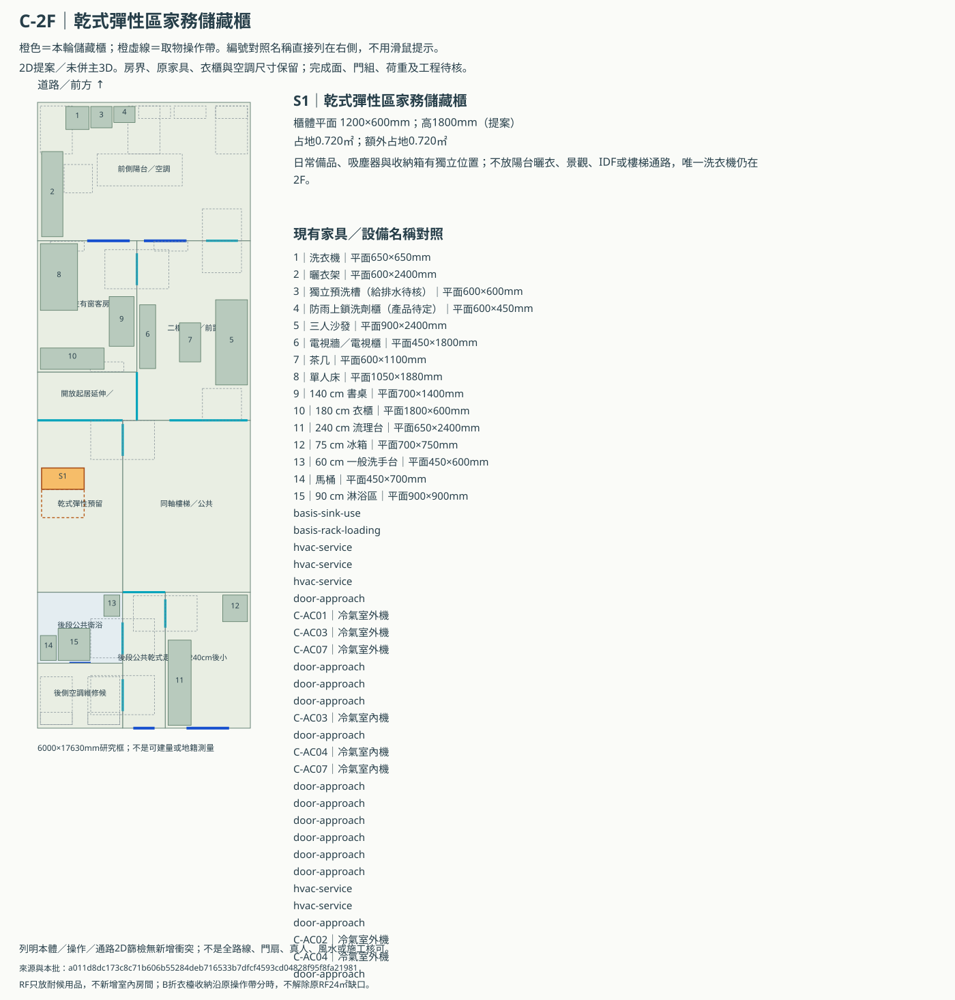
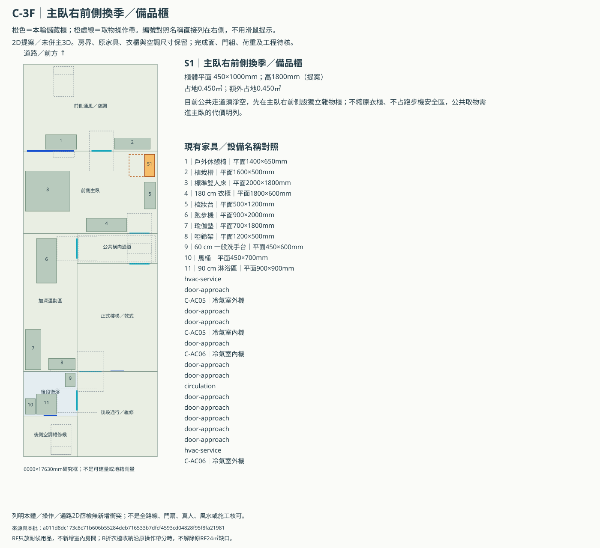
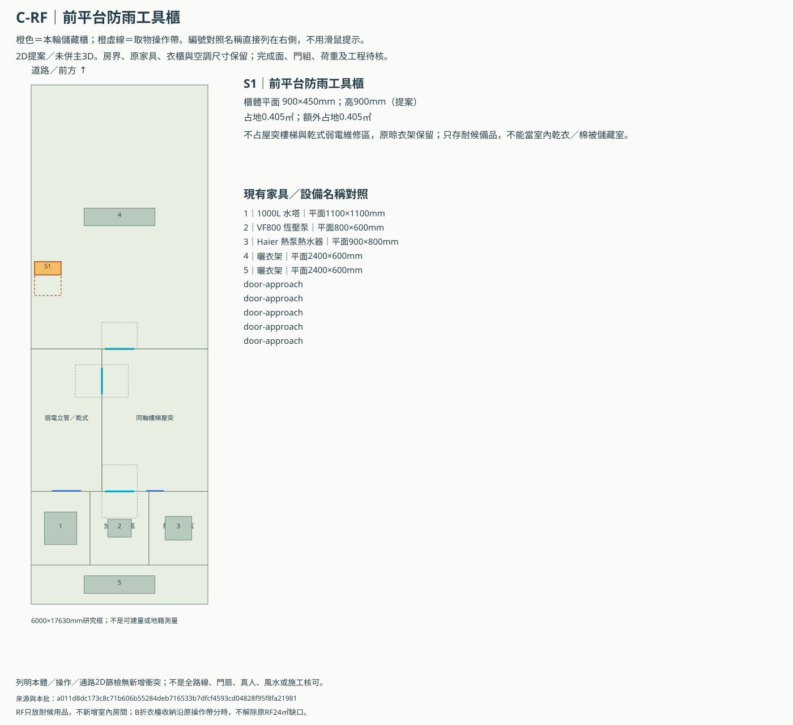

ABC 2F以上逐層儲藏與品名圖
依屋主新需求，每棟2F／3F及RF各有獨立儲藏提案。10張圖涵蓋9個棟層，B RF兩案不相加；不扣原衣櫃容量，不新增屋頂房間。主3D尚未加入本輪櫃體。
數字／機號不能只靠滑鼠提示：各圖右側都有名稱對照。S1是新雜物櫃；灰虛線為原預留、橙虛線為新取物帶。既有圖內家電只代表尺寸，未因此選型或增加台數。
| 棟層版本 | 儲藏名稱 | 平面尺寸mm | 櫃高mm（提案） | 占地㎡ | 額外占地㎡ | 保留與代價 | 原操作帶共用 | 完成面商品門組結構核對 | 主3D同步 |
|---|---|---|---|---|---|---|---|---|---|
| A-2F | 書房入口側獨立雜物櫃 | 900×450 | 1800 | 0.405 | 0.405 | 公用走道保持不置櫃；新櫃放書房內，文具、備品與小家電分層，不扣原540cm衣櫃與240cm淺櫃。 | 待資料 | 未併入 | |
| A-3F | 多用室前側家務收納櫃 | 900×450 | 1800 | 0.405 | 0.405 | 收換季用品與劇院備品，原沙發床、書桌及書櫃保留；實際展床、門片與換氣仍須整組核對。 | 待資料 | 未併入 | |
| A-RF | 後平台防雨工具櫃 | 900×450 | 900 | 0.405 | 0.405 | 只放耐候工具／清潔備品；不拿弱電立管當雜物間，不新增屋頂房間。錨定、防水、設備拆換與荷重待核。 | 待資料 | 未併入 | |
| B-2F | 安靜起居側緣乾式雜物櫃 | 450×1200 | 1800 | 0.54 | 0.54 | 沿左側牆放輕量乾燥備品；不放濕設備、化學品或震動電器，不占獨立乾背室、主臥與兩衛，不改兩種一樓搬轎分支。 | 待資料 | 未併入 | |
| B-3F | 公共安靜區側緣乾式雜物櫃 | 450×1200 | 1800 | 0.54 | 0.54 | 同位置接Q3三樓完整圖，不占KTV聲學面積或設備機櫃，不把神桌乾背保護室拿來堆雜物；原KTV／RF缺口仍保留。 | 待資料 | 未併入 | |
| B-RF-D1 | 折衣桌下防雨收納工作檯 | 1200×450 | 900 | 0.54 | 0 | 沿D1原折衣桌占地改為帶防雨下櫃的工作檯；原折衣功能、操作帶及分時通行保留，不再吃已不足24㎡的平台。 | daily-arrival／rack-operation／table-operation | 待資料 | 未併入 |
| B-RF-D2 | 折衣桌下防雨收納工作檯 | 1200×450 | 900 | 0.54 | 0 | D2保留自己的桌位與操作帶，獨立列櫃，不把D1位置借過來；耐候、錨定、荷重與實際桌高另核。 | table-operation | 待資料 | 未併入 |
| C-2F | 乾式彈性區家務儲藏櫃 | 1200×600 | 1800 | 0.72 | 0.72 | 日常備品、吸塵器與收納箱有獨立位置；不放陽台曬衣、景觀、IDF或樓梯通路，唯一洗衣機仍在2F。 | 待資料 | 未併入 | |
| C-3F | 主臥右前側換季／備品櫃 | 450×1000 | 1800 | 0.45 | 0.45 | 目前公共走道須淨空，先在主臥右前側設獨立雜物櫃；不縮原衣櫃、不占跑步機安全區，公共取物需進主臥的代價明列。 | 待資料 | 未併入 | |
| C-RF | 前平台防雨工具櫃 | 900×450 | 900 | 0.405 | 0.405 | 不占屋突樓梯與乾式弱電維修區，原晾衣架保留；只存耐候備品，不能當室內乾衣／棉被儲藏室。 | 待資料 | 未併入 |
A-2F｜書房入口側獨立雜物櫃
公用走道保持不置櫃；新櫃放書房內，文具、備品與小家電分層，不扣原540cm衣櫃與240cm淺櫃。


A-3F｜多用室前側家務收納櫃
收換季用品與劇院備品，原沙發床、書桌及書櫃保留；實際展床、門片與換氣仍須整組核對。


A-RF｜後平台防雨工具櫃
只放耐候工具／清潔備品；不拿弱電立管當雜物間，不新增屋頂房間。錨定、防水、設備拆換與荷重待核。


B-2F｜安靜起居側緣乾式雜物櫃
沿左側牆放輕量乾燥備品；不放濕設備、化學品或震動電器，不占獨立乾背室、主臥與兩衛，不改兩種一樓搬轎分支。


B-3F｜公共安靜區側緣乾式雜物櫃
同位置接Q3三樓完整圖，不占KTV聲學面積或設備機櫃，不把神桌乾背保護室拿來堆雜物；原KTV／RF缺口仍保留。


B-RF-D1｜折衣桌下防雨收納工作檯
沿D1原折衣桌占地改為帶防雨下櫃的工作檯；原折衣功能、操作帶及分時通行保留，不再吃已不足24㎡的平台。

B-RF-D2｜折衣桌下防雨收納工作檯
D2保留自己的桌位與操作帶，獨立列櫃，不把D1位置借過來；耐候、錨定、荷重與實際桌高另核。


C-2F｜乾式彈性區家務儲藏櫃
日常備品、吸塵器與收納箱有獨立位置；不放陽台曬衣、景觀、IDF或樓梯通路，唯一洗衣機仍在2F。


C-3F｜主臥右前側換季／備品櫃
目前公共走道須淨空，先在主臥右前側設獨立雜物櫃；不縮原衣櫃、不占跑步機安全區，公共取物需進主臥的代價明列。


C-RF｜前平台防雨工具櫃
不占屋突樓梯與乾式弱電維修區，原晾衣架保留；只存耐候備品，不能當室內乾衣／棉被儲藏室。


本批只篩列明2D房界、原本體／操作、預留及既有試線；實際門活動、結構防水荷重、櫃內有效容量、全程取物／搬入及高處取物仍待核。C3公共取物會進主臥，B取物須維持安靜乾燥，RF防雨櫃不存棉被及怕潮物品。